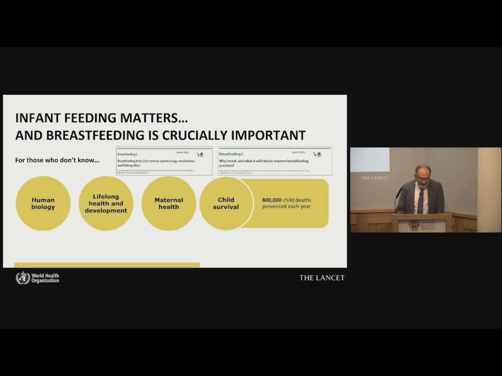

Hôm rồi ra Hà Nội, mình được một học trò cũ từ Đại học Y Dược TPHCM mời livestream, chủ đề về việc nuôi con bằng sữa mẹ, cho con ăn dặm… Và nhìn chung, vì mình cảm nhận, nuôi con là phải làm con hạnh phúc - ba mẹ hạnh phúc, nên bọn mình chọn chủ đề là NUÔI CON HẠNH PHÚC, và cũng chính là điều mà mình làm tốt nhất ở vai trò của một người mẹ.
Trong sự nghiệp của mình, mình đã nghiên cứu khá nhiều và cũng có bài báo khoa học xuất bản về chủ đề Sữa mẹ. Mình khá tự hào.
Và mình còn muốn tiếp tục chủ đề đó nữa, trong thời gian này, bằng cách có thể viết sách, nghĩ đến cuốn sách đầu tiên của Tiến sĩ Quỳnh Nhi, là mình chỉ có thể nghĩ đến nó buộc, nó nên và nó cần phải là về sữa mẹ. Mặc dù, hiện nay, nhiều chủ đề khác đã được đặt hàng.
Mình cũng tự hào vì đã nuôi các con mình bằng sữa mẹ rất thành công và hạnh phúc. Lý thuyết và thực hành không hề tách rời nhau! Các cháu nhà mình, cũng được có chút động lực mà được cho con bú mẹ, con trai của chị mình, các con của em gái mình, các con của em chồng mình… Bà ngoại của chồng mình, mỗi lần gọi điện hỏi thăm, đều khuyến khích “nên cho con bú mẹ cháu nhé, không gì bằng sữa mẹ” (bà ngoại năm nay ngoài 90 tuổi đó, tuyệt vời không!)
Bài viết này, mình chia sẻ link trực tiếp về livestream của Lancet (một tạp chí khoa học nổi tiếng) và WHO (Tổ chức Y tế thế giới) khi họ tung ra series các bài báo khoa học về sữa mẹ, trong bối cảnh tác động rất lớn của quảng cáo, tiếp thị các loại sữa công thức.
Lời khuyên của mình, ở vai trò là một người mẹ trung lưu, một người học xong bằng cấp tiến sĩ, một người có 15 năm kinh nghiệm giảng dạy tại Đại học Y Dược TPHCM, cho các mẹ tại Việt Nam:
Hãy tự tin, người Việt Nam mình có truyền thống đáng tự hào, là luôn cho con bú sữa mẹ. “Sảy mẹ bú dì”, không có mẹ thì có dì, cứ cho con bú, phải là khái niệm đó trong đầu trước đã.
Học cách để có thể cho con bú mẹ trong vòng 1 giờ đầu sau sinh. Sinh thường, sinh mổ gì không cần biết, cứ sau sinh, phải cho con bú mẹ, phải cho bú mẹ, cho lên ngực mẹ ngay đi!
Hãy tự tin và luôn học hỏi, bình tĩnh để cho con bú được HOÀN TOÀN trong 6 tháng đầu. Cứ sữa mẹ thôi, trực tiếp cũng được, vắt ra cũng được, miễn là CHỈ sữa mẹ mà thôi.
Cho con bú được càng lâu càng tốt. Lúc nào muốn nghỉ thì nghỉ, nhưng cần ít nhất là đến 2 tuổi. Ai nói gì mặc kệ, con tui tui nuôi bằng sữa mẹ.
Đừng tốn tiền, đừng theo những lời khuyên của người bán hàng, công ty bán hàng nào hết, nào “sữa này tốt”, “bổ sung xyz”, “dặm thêm”… chỉ tốn tiền thôi! Cá nhân mình chẳng tốn đồng tiền nào cho “sữa công thức”.
Con mình bú đến 5 tuổi rưỡi, đứa thứ 2 thì đang bú tiếp, hiện nó được 3 tuổi rưỡi rồi.
Mình làm về dinh dưỡng cộng đồng và được nhiều công ty mời làm đại diện dinh dưỡng lắm, nhưng mình có blacklist riêng, hihi, và không - sẽ không bao giờ làm cho các công ty sữa trẻ em! Mình biết mình “công khai” điều này nghĩa là tự làm giới hạn khả năng kiếm thêm thu nhập (kiểu tiền ai cũng muốn kiếm!), nhưng chịu thôi, giá trị của mình KHÔNG gắn liền với công ty sữa, nhất định không. Và mình cũng sẽ khuyên những bạn bè, học trò tài năng của mình, đừng làm điều đó, hãy cống hiến tài năng cho sự phát triển của loài người.
Và dĩ nhiên, sữa cũng chỉ là một loại thực phẩm. Nó cũng cần cho những bé bị mất mẹ, mẹ nằm trong nhóm thiểu số không có sữa mẹ, hoặc có những mẹ có vấn đề về sức khoẻ tinh thần.
The Lancet: The 2023 series on breastfeeding
